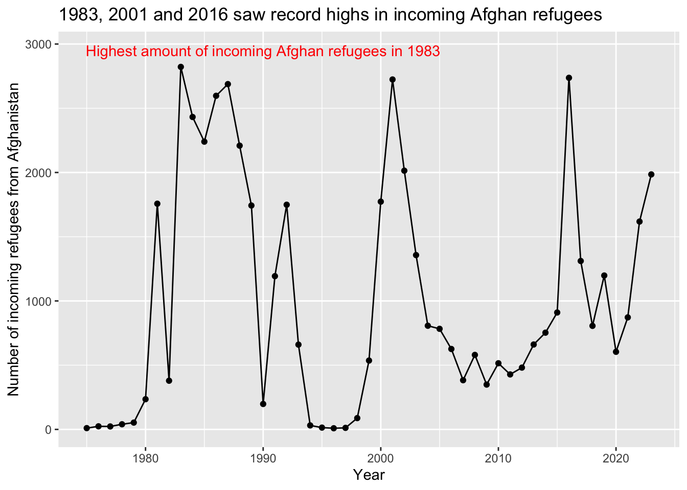

Afghan refugees
1 Introduction
This is a living document in which I am doing analysis of available refugee and asylum data, specifically for those coming to the U.S. from Afghanistan. I will be using the R libraries tidyverse and ggplot2 to ask and answer basic questions about some datasets we currently have access to. The data will come from the following sources:
- Chris Parson’s refugee dataset
- This has already been converted from .dta to .csv using Pandas.
- Wrapsnet data
- UNHCR refugee data
- We may also have asylum data from TRAC
I will try to publish this analysis on Github Pages, and it will be used for a reporting project on this same topic with Jazzmin Jiwa.
2 Securing our refugee microdata
From Chris Parson’s data: The first thing I want to do is combine two separate datasets with refugee microdata, and narrow the data down to only show rows where the birth or citizenship country is ‘Afghanistan.’ (I did this separately in R.) The below dataframe includes both datasets from Parson’s data, where each row has ‘afghanistan’ for either the birth or citizenship country. It includes a column I added to indicate the current age of each refugee.
X city city_code county_fips state_fips fips birth_country_name
1 14 243 043 06 06043 afghanistan
2 15 243 043 06 06043 afghanistan
3 16 243 043 06 06043 afghanistan
4 17 243 043 06 06043 afghanistan
5 18 243 043 06 06043 afghanistan
6 110 1000 001 06 06001 afghanistan
citizenship_country_name citizenship_stable year birth_year sex
1 afghanistan afghanistan 1983 1958 female
2 afghanistan afghanistan 1983 1959 female
3 afghanistan afghanistan 1983 1962 female
4 afghanistan afghanistan 1983 1950 male
5 afghanistan afghanistan 1983 1936 female
6 afghanistan afghanistan 1983 1977 female
marital_status family_Status education english_reading english_writing
1 unknown unknown unknown unknown (U) unknown (U)
2 unknown unknown unknown unknown (U) unknown (U)
3 unknown unknown unknown unknown (U) unknown (U)
4 unknown unknown unknown unknown (U) unknown (U)
5 unknown unknown unknown unknown (U) unknown (U)
6 unknown unknown unknown unknown (U) unknown (U)
english_speaking county10name longitude latitude id_merging current_age
1 unknown (U) Mariposa -119.9621 37.4869 12408 65
2 unknown (U) Mariposa -119.9621 37.4869 12408 64
3 unknown (U) Mariposa -119.9621 37.4869 12408 61
4 unknown (U) Mariposa -119.9621 37.4869 12408 73
5 unknown (U) Mariposa -119.9621 37.4869 12408 87
6 unknown (U) NA NA 999999 46This dataframe has 34791 rows, which means it looks at 34791 individual refugees.
3 Exploring our data by year
The most important question for this particular reporting project is, have incoming refugees from Afghanistan increased over the years, particularly after the U.S. invaded Afghanistan in 2001? Grouping the data by year looks like this:
Code
# A tibble: 35 × 2
year refugees
<int> <int>
1 1975 10
2 1976 24
3 1977 23
4 1978 40
5 1979 53
6 1980 235
7 1981 1757
8 1982 379
9 1983 2822
10 1984 2432
11 1985 2240
12 1986 2597
13 1987 2688
14 1988 2209
15 1989 1743
16 1990 198
17 1991 1193
18 1992 1749
19 1993 660
20 1994 31
21 1995 14
22 1996 9
23 1997 12
24 1998 88
25 1999 536
26 2000 1773
27 2001 2724
28 2002 2014
29 2003 1357
30 2004 807
31 2005 783
32 2006 626
33 2007 383
34 2008 580
35 NA 2Our most important finding from this view is that we don’t have any data beyond 2008. We also see that the years the U.S. saw the most incoming refugees were 1983 and 2001. Let’s see what this looks like:
Warning: Removed 1 row containing missing values (`geom_line()`).Let’s add our PRM data, which goes from 2008 to 2023, and should give us a fuller picture of how incoming refugee numbers have fluctuated over time. [We should probably FOIA for pre-2008 data from PRM in order to be able to compare the numbers with Chris Parson’s microdata.]
Code
af_ref_PRM <- read.csv("PRM_af_year.csv",stringsAsFactors=F)
PRM_by_year <- select(af_ref_PRM, year, fy_total)
PRM_by_year <- filter(PRM_by_year,year>2008)
PRM_by_year <- arrange(PRM_by_year,year)
colnames(PRM_by_year)[2]="refugees"
all_years <- rbind(by_year, PRM_by_year)
all_years <- all_years[-c(35), ]
print(all_years,n=Inf)# A tibble: 49 × 2
year refugees
<int> <int>
1 1975 10
2 1976 24
3 1977 23
4 1978 40
5 1979 53
6 1980 235
7 1981 1757
8 1982 379
9 1983 2822
10 1984 2432
11 1985 2240
12 1986 2597
13 1987 2688
14 1988 2209
15 1989 1743
16 1990 198
17 1991 1193
18 1992 1749
19 1993 660
20 1994 31
21 1995 14
22 1996 9
23 1997 12
24 1998 88
25 1999 536
26 2000 1773
27 2001 2724
28 2002 2014
29 2003 1357
30 2004 807
31 2005 783
32 2006 626
33 2007 383
34 2008 580
35 2009 349
36 2010 515
37 2011 428
38 2012 481
39 2013 661
40 2014 753
41 2015 910
42 2016 2737
43 2017 1311
44 2018 806
45 2019 1198
46 2020 604
47 2021 872
48 2022 1618
49 2023 1985Some notes on this tibble: This combines two different datasets – one downloaded from the State Dept’s Bureau of Population, Refugees, and Migration and one from Chris Parson’s microdata on refugee resettlement. Both of these datasets were narrowed to just total refugees by year from Afghanistan and then combined. Chris Parson’s data is from 1975 to 2008, and the PRM data is 2009 to 2023. FOIA: Ideally, we will be able to request PRM data from before 2008 in order to be able to compare Parson’s data to the State Dept’s. We removed one row from Parson’s data in which year was N/A and refugees was 2.
Let’s see what it looks like if we create a line chart out of our new, more complete dataset.
Code
ggplot(all_years, aes(x=year,y=refugees,group = 1))+geom_point()+geom_line()+labs(x = "Year", y = "Number of incoming refugees from Afghanistan", title = "1983, 2001 and 2016 saw record highs in incoming Afghan refugees")+annotate("text", x=1990, y=2950, label="Highest amount of incoming Afghan refugees in 1983", color="red")
Figure 2 tells us some notable information for our reporting: the highest amounts of incoming refugees are now arriving in 1983, 2016 and 2001. We should think through what was happening around these years to create a sharp increase in incoming refugees – there are some obvious answers here. I think it’d also be useful to compare these numbers to numbers from Iraq.